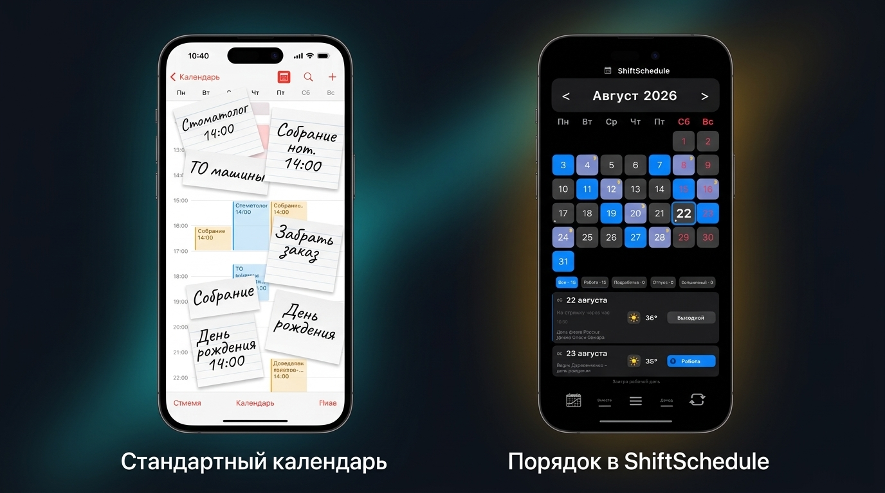
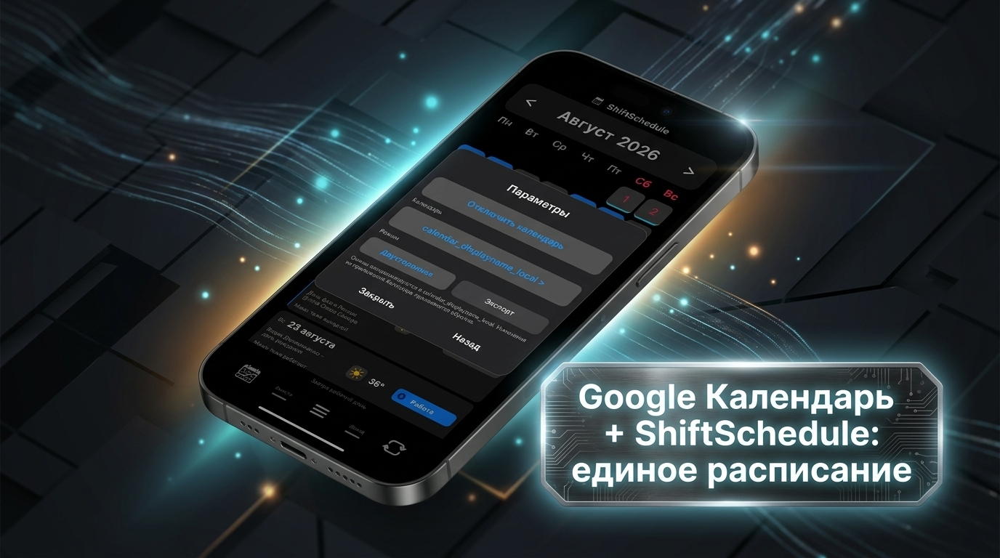

Каждый, кто работает по сменному графику — 2/2, «сутки через трое» или «день/ночь/отсыпной/выходной» — рано или поздно сталкивается с одной и той же бытовой проблемой.
Окружающий мир (врачи, сервисы, детские сады, школьные собрания, друзья на пятидневке) живёт по стандартным неделям с понедельника по пятницу и планирует всё в Google Календаре или Яндекс Календаре. А ваша реальная жизнь подчиняется 4-дневному или скользящему циклу смен, который постоянно смещается относительно дней недели.
В итоге расписание человека со сменным графиком раскалывается на две изолированные части.
Вечная дилемма сменщика: два календаря и постоянная путаница
Вспомните типичный диалог: — «Сможешь записаться к стоматологу на следующий четверг в 14:00?» — «Подожди, сейчас посмотрю...»
В этот момент приходится закрывать мессенджер, открывать фотографию графика на холодильнике или специальное приложение смен, отсчитывать дни, проверять, дневная это смена, ночная или отсыпной, а затем возвращаться в Google Календарь и проверять, нет ли на это время других записей.
Главный парадокс сменной работы: специализированные календари смен отлично считают циклы, но ничего не знают про визиты к врачу и дни рождения. А стандартные календари вроде Google Календаря идеально хранят личные дела, но абсолютно беспомощны перед сменными графиками.
Почему стандартный Google Календарь ломается на сменном графике
Как мы подробно разбирали в нашей статье про график «сутки через трое», стандартные календари изначально проектировались под классическую пятидневку. Попытка вручную настроить в них сменный график быстро приводит к тупику:
- Недельные повторы не работают. В Google Календаре легко настроить событие «Каждый вторник» или «С понедельника по пятницу». Но если вы работаете «сутки через трое» или «два через два», смена повторяется каждые 4 дня. Настроить такой плавающий цикл стандартными правилами сложно.
- Первая же подмена ломает всё расписание на год вперёд. Стоит один раз поменяться сменами с коллегой или выйти на подработку, как серия повторяющихся событий в Google Календаре начинает сбоить.
- Визуальный шум. Если создавать каждую смену как отдельное событие, календарь превращается в сплошную кашу из разноцветных плашек, где личные дела полностью теряются на фоне бесконечных записей «Работа».

Сравнение: хаос в стандартном календаре против порядка в ShiftSchedule
Решение в ShiftSchedule: мост между сменами и календарём Android
Чтобы избавить вас от необходимости разрываться между двумя мирами, в ShiftSchedule реализована гибкая интеграция с системным календарём Android (включая Google Календарь, Яндекс Календарь и локальный календарь устройства).
Вы можете сами выбрать подходящий режим работы:
1. Односторонняя синхронизация (только экспорт смен)
ShiftSchedule передаёт во внешний календарь только данные о ваших рабочих сменах: дневные и ночные выходы, дежурства, подработки и отпуска. Из самого Google Календаря приложение ничего не забирает.
- Этот режим идеален, если вы хотите просто видеть свои смены в общем календаре или открыть к ним доступ членам семьи, не перегружая ShiftSchedule внешними записями.
2. Двусторонняя синхронизация (полный обмен)
Работает в обе стороны: смены уходят в Google Календарь, а все ваши внешние события (праздники, дни рождения близких, записи к врачу и напоминания) аккуратно подтягиваются прямо в карточку соответствующего дня внутри ShiftSchedule.
- Вы открываете свой рабочий график и на одном экране видите полную картину: тип смены, прогноз погоды и список запланированных личных дел.
Заметки с точным временем и напоминаниями
Прямо в ShiftSchedule можно создавать заметки к любому числу месяца — как памятку на весь день, так и с точным временем оповещения. При включённой синхронизации эта заметка автоматически отправляется в Google Календарь со всеми установленными уведомлениями.
💡 Лайфхак: виджет смен на рабочий стол прямо сейчас
Если вам нужен быстрый виджет графика смен на главном экране смартфона — включите синхронизацию и добавьте на рабочий стол стандартный виджет Google Календаря. Ваши рабочие смены и подработки будут отображаться на главном экране сразу при разблокировке телефона.

Настройки синхронизации и умных заметок в ShiftSchedule
Пошаговая настройка: как объединить графики за 1 минуту
Настройка не требует сложных манипуляций:
- Задайте рабочий график в ShiftSchedule. Если вы ещё не настроили свой цикл, выберите тип графика (например, 2/2 или сутки через трое) и укажите дату ближайшей смены.
- Перейдите в «Настройки» → «Синхронизация с календарем».
- Предоставьте доступ к календарю Android. Приложение запросит стандартное системное разрешение на чтение и запись событий.
- Выберите календарь для экспорта смен. Вы можете выбрать локальный календарь телефона или аккаунт Google.
- Выберите режим синхронизации. Включите одностороннюю передачу смен или активируйте двусторонний режим для показа внешних событий.
Важное преимущество: чистая отмена без мусора в календаре
Если вы решите временно или навсегда отключить синхронизацию в настройках ShiftSchedule, приложение автоматически удалит все созданные им рабочие события из внешнего календаря. Вам не придётся вручную вычищать десятки смен по одной — календарь останется абсолютно чистым. При повторном включении смены мгновенно вернутся на свои места.
3 реальных жизненных сценария, где это экономит нервы
Сценарий 1: Запись к врачу или в автосервис
Вам предлагают время через три недели. Вместо того чтобы мучительно высчитывать смены по пальцам, вы открываете ShiftSchedule: прямо в сетке дней видно, какой день выходной, какая в этот день ожидается погода и нет ли на эту дату других семейных планов из Google Календаря.
Сценарий 2: Семейные выходные и совместный отдых
Как мы подробно рассказывали в статье о поиске общих выходных с партнёром, согласование планов при плавающих графиках часто превращается в головную боль. Благодаря экспорту смен в Google Календарь ваша семья в режиме реального времени видит рабочие дни и может заранее запланировать поездку на даты, когда вы точно отдыхаете.
Сценарий 3: Подработка без риска накладок
Если вам предлагают взять дополнительную смену или выйти на подработку, вы сразу видите, свободен ли день от домашних дел и не назначено ли на эту дату важное семейное событие.
Итог
Сменный график не должен изолировать вас от обычной жизни и усложнять планирование.
Когда специализированный сменный календарь и универсальный планировщик работают в связке, отпадает необходимость держать расписание в голове или судорожно переключаться между экранами. Всё ваше время — и рабочее, и личное — становится прозрачным, понятным и управляемым.
Попробуйте ShiftSchedule
Бесплатно. Без рекламы. Для тех, кто работает по сменам.
Скачать в RuStore Скачать на GitHub